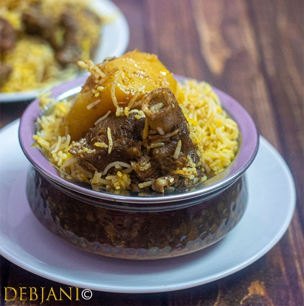

Mutton Biryani

Description
This is one of the most famous recipes in all of Kolkata. It takes approximately 2-4 hours to cook it and is extremely delicious and lovely to taste.
Ingredients
Steps:-
- Boil the mutton for a couple of hours
- Cook the rice and add the ingredients
- Cook the aloo and add it.
- Cook the mutton and add it.
- Mix all the ingredients and cook them together.